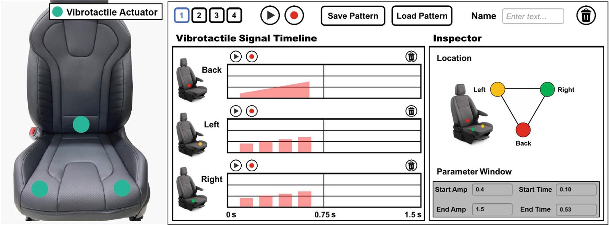

Designing tactile warnings with drivers
How can drivers help shape the tactile warnings they receive?
EuroHaptics · Conference paper

The question
Tactile warnings must communicate information while fitting the driver's context and expectations. This work involves participants in the design of seat-based warning patterns.
The system and study
A multi-actuator seat and a visual pattern-design interface support the creation and discussion of vibrotactile warnings.
What we learned
The participatory process provides design knowledge about how users interpret and construct warning patterns for the driver's seat.
See the research
Publication
Participatory Design for In-Vehicle Vibrotactile Warnings on the Driver’s Seat
EuroHaptics, 2024.